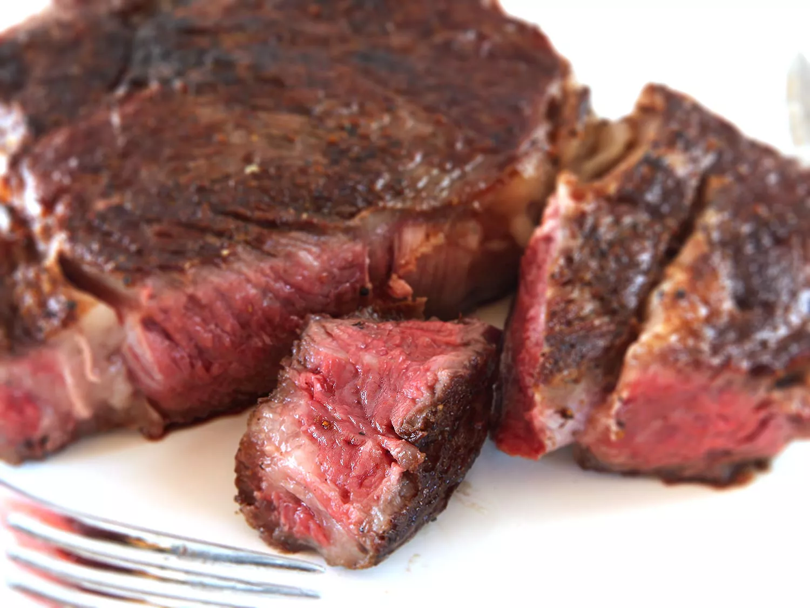

Reverse Seared Steak

A delicious rendition of the classic sear--the reverse sear reduces charring and ensures an even cook by broiling the steak first, and then searing it at the end.
- Rib-eye Steak
- Coarse Salt
- Olive Oil
- Preheat Oven to 250F
- Cook until 15F below desired doneness
- Prepare a hot skillet with olive oil
- Sear 20 seconds each side